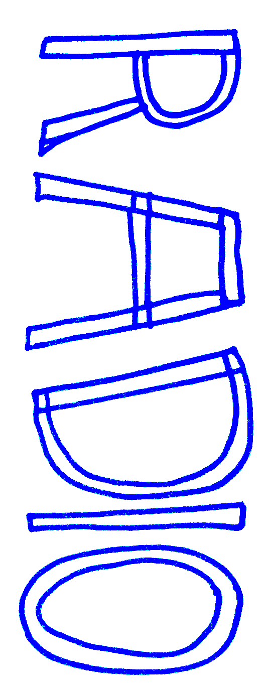

Radio ventoline is a small radio station that broadcasts live one evening a week from a small living room.
Thought as a radiophonic experimentation, a tool to gather and archive (and organise events tbh) the ephemeral radio travels and takes shapes around projects and locations it lands on.
If you have any ideas, content to you want to share, collaborate, organise something... contact us at contact(at)radioventoline.com : )
The audio flux is provided by the best team P-node <3